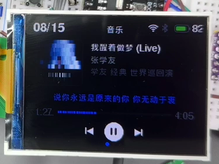
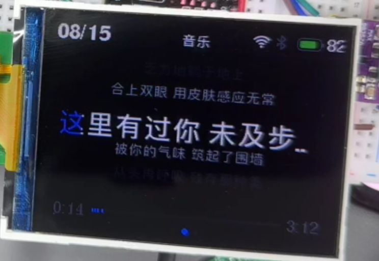
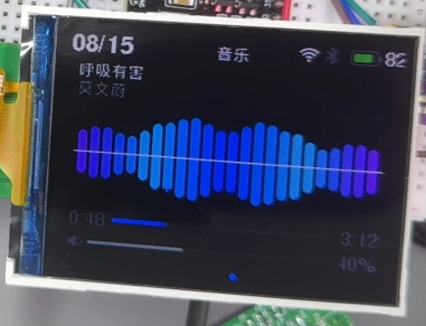
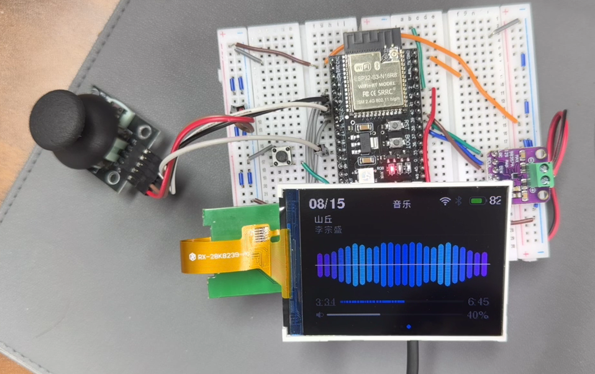
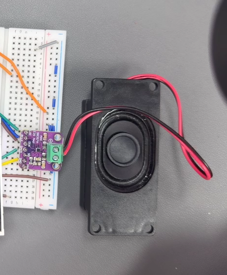
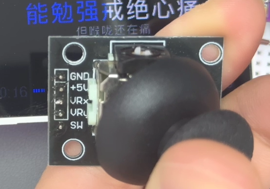
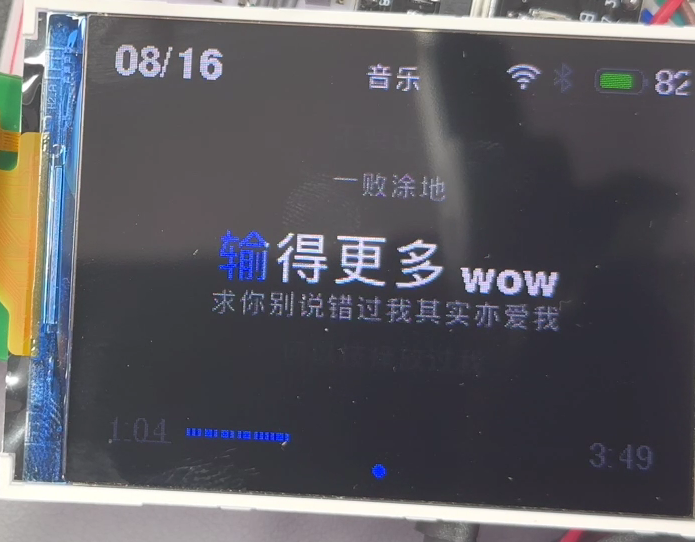

ESP32-S3 · MAX98357A D 类功放 · ST7789 SPI 屏 · 模拟摇杆
本期只讲原理：每一步的输入是什么、输出是什么、为什么需要这一步



第一期讲「设备如何与人交互」，第二期讲「设备如何听懂人话」
| 音频链路 | 数字化原理、D 类功放、I2S、流式播放、缓冲、解码、DMA |
| 显示链路 | SPI 传输、RGB565 色彩编码、局部刷新、字形渲染 |
| 输入链路 | 数字按键消抖、模拟摇杆的分压原理与 ADC 判向 |
| 衍生原理 | 播放位置怎么算、频谱怎么从波形变出来、双核怎么分工 |
共同点：三条链路全部是本地的， 不依赖云端 —— 这是这台设备作为「播放器」的全部基础。
| 采集 | 数字麦克风的工作原理，I2S 输入方向 |
| 端侧唤醒 | 神经网络唤醒词模型如何在 MCU 上运行 |
| 实时语音流 | WebSocket 双向音频、协议时序设计 |
| 大模型 | 语音识别 + 对话 + 语音合成一体化链路 |
回到第一期：大模型返回的语音， 最终要经过同一套 I2S 输出链路才能被听见；对话状态也要靠同一块屏显示。
本期的边界： 不出现任何 AI / 大模型 / 唤醒词内容，也不讲调试经历和工程注意事项。 只回答一个问题：这三条链路的每一步，在物理上和数学上到底在做什么。
2.8 寸屏 + 一个喇叭 + 一个摇杆，联网流式播放、逐行歌词、实时频谱

歌单直链，MP3 / FLAC 边下边解，无需下载整首
LRC 时间戳解析，按播放位置定位当前行
对波形做 256 点 FFT，16 条柱 50fps 刷新
上下左右 + 按下，翻歌单、切页面
每一条链路，都是「芯片内的数字数据」与「外部世界的物理量」之间的一次转换
| 外设 | I2S（3 根线：BCLK / LRC / DIN） |
| 对端 | MAX98357A D 类功放 → 喇叭 |
| 物理量 | 空气压强变化 |
| 外设 | SPI（MOSI / SCLK + CS / DC / RST） |
| 对端 | ST7789 控制器 → 2.8" TFT，320×240 |
| 物理量 | 每个像素的红绿蓝亮度 |
| 数字输入 | 3 个按键 → GPIO，读回 0 或 1 |
| 模拟输入 | 摇杆 X/Y → ADC，读回 0~4095 |
| 物理量 | 手指的按压与推动 |
三条链路的共同结构： 音频是数字变声波，显示是数字变光，输入是物理位移变数字。 所有嵌入式设备本质上都在做同一件事 —— 在数字世界和物理世界之间搬运信息。剩下的一切都是细节。
连续的气压波 → 一串整数：时间轴上切片，数值轴上量化
空气压强随时间的连续起伏。声带 / 振膜推动空气，形成疏密相间的压力波。
每隔固定时间量一次瞬时气压值。每秒的次数 = 采样率。
每个采样点用整数表示。位数 = 位深，决定动态范围。
// 一秒钟的 CD 品质立体声，本质就是这样一串数： [ -1204, -892, 341, 1876, 2033, 1420, -77, ... ] ← 每秒 44100 组 // 数据量 = 采样率 × 位深 × 声道数 44100 × 16 × 2 = 1411 kbps ≈ 176 KB/s
请记住这一点： PCM 是这条链路上唯一真正被播放的东西。 MP3、FLAC 都只是它的压缩包装 —— 解码器的职责，就是把包装拆回 PCM。
D 类功放的核心思想：不做线性放大，只做开关 —— 然后让喇叭线圈自己滤波
DAC 芯片把数字变成模拟电压 → 功放芯片把它线性放大到能推喇叭。
波形保真度高，但需要散热、需要两颗芯片、外围元件多。
输出管只有两种状态：彻底导通、彻底关断。中间态尽可能不停留。
那音量大小怎么表达？靠改变开关的占空比 —— 见下方。
① PWM 脉宽调制 —— 用「高电平占多久」编码信号幅度。开关频率远高于音频（数百 kHz）。
大信号 → 占空比高 ▔▔▔▔▔▁▔▔▔▔▔▁▔▔▔▔▔▁ 小信号 → 占空比低 ▔▁▁▁▁▁▔▁▁▁▁▁▔▁▁▁▁▁
② 喇叭线圈 = 天然低通滤波器 —— 电感阻碍电流突变，把高频方波平滑成低频模拟波形。
所以 MAX98357A 的本质是： 把「数字转模拟」和「功率放大」用同一套开关电路合成了一步。 这就是为什么指甲盖大的一颗芯片能推 3W 喇叭，还几乎不发热。

音频对总线的特殊要求是「等时性」—— 不只要送到，还要精确准时地送到
每个上升沿 = 「这一位有效，请采样」。划分比特边界。
划分声道边界：低电平传左声道，高电平传右声道。
样本内容本身，串行逐位送出，高位在前（MSB first）。
├──────── 左声道 16bit ────────┤├──────── 右声道 16bit ────────┤ LRC ▁▁▁▁▁▁▁▁▁▁▁▁▁▁▁▁▁▁▁▁▁▁▁▁▁▁▁▁▁▁▁▁▁▁▁▏▔▔▔▔▔▔▔▔▔▔▔▔▔▔▔▔▔▔▔▔▔▔▔▔▔▔▔▔▔▔▔▔▔ 44.1 kHz BCLK ▏▁▏▁▏▁▏▁▏▁▏▁▏▁▏▁▏▁▏▁▏▁▏▁▏▁▏▁▏▁▏▁▏▁▏▁▏▁▏▁▏▁▏▁▏▁▏▁▏▁▏▁▏▁▏▁▏▁▏▁▏▁▏▁ 1.41 MHz DIN ╳ b15 ╳ b14 ╳ b13 ╳ ...................... ╳ b1 ╳ b0 ╳ MSB first
核心原理： 数据线上只有 0 和 1，没有任何「这是第几个样本」的标记。 是 LRC 划出声道边界、BCLK 划出比特边界，接收方才知道如何解读这串比特 —— 所以三者必须严格同步，任何一根失步，收到的都是噪音而非音乐。
数字域 → 边界 → 模拟域，每一部分只做一件事
内置 I2S 硬件外设：从内存取 PCM 样本，按精确时钟节奏串行送出。
D 类开关调制，把数字直接变成功率，无需独立 DAC。
线圈通电产生磁场推动振膜；线圈电感兼任低通滤波器。
BCLK | 位时钟 → 划分比特边界 |
LRC | 帧同步 → 划分声道边界 |
DIN | 串行数据 → 样本内容 |
整条数字音频通路的物理实现，就是这三根线加上电源和地。
功放芯片默认取 (L + R) / 2 混合声道。
这个操作不丢失任何声音内容，只丢失「方位信息」。而在巴掌大的音箱上， 两个喇叭间距只有几厘米 —— 人耳本就无法分辨方位，立体声没有意义。
附带收益：DMA 带宽减半，因为只需要搬一路数据。
一条八级流水线 —— 速度不匹配的地方，就必须有缓冲
HTTPS 取歌单 JSON：ID / 标题 / 歌手 / 封面地址
用歌曲 ID 换取真实的音频文件播放地址
HTTP 流式连接，边下边播，不下载整首 → P.09
吸收网络速度的不确定性 → P.10
MP3 / FLAC → PCM
格式差异到此为止 → P.11
复制一路 PCM 送去做傅里叶变换 → P.14
吸收 CPU 调度的不确定性 → P.12
硬件按恒定时钟串行送出 → 功放 → 喇叭
网络是不稳定的（秒级抖动）、解码是突发的（毫秒级抖动）、 I2S 是恒定的（严格 44100 样本/秒）。 速度不匹配的界面上，必须放缓冲。
MP3 也好 FLAC 也好，解码后都是 PCM，往后链路完全一样 —— 解码器的本质是格式适配层。 （第二期的语音回复本就是 PCM，连解码都省了，直接从第 7 步接入。）
因为 MP3 不是一个整体文件，而是一串可独立解码的帧
| 一首 4 分钟 320k | ≈ 10 MB |
| 设备全部外部内存 | 8 MB |
连一首歌都放不下。即便放得下，按下播放也要等十几秒才出声。
MP3 文件不是一个整体，而是一连串独立帧的拼接。
| 每帧时长 | 约 26 ms 音频 |
| 每帧自带 | 帧头：采样率 / 码率 / 声道数 |
| 关键性质 | 每帧可独立解码，不依赖前后帧 |
MP3 文件结构： ┌────────┬────────┬────────┬────────┬────────┬───── │ 帧头+数据│ 帧头+数据│ 帧头+数据│ 帧头+数据│ 帧头+数据│ ... └────────┴────────┴────────┴────────┴────────┴───── 26ms 26ms 26ms 26ms 26ms → 凑够一帧，就能解出 26ms 的 PCM，无需等待整个文件 → HTTP 响应体本就是字节流：服务器发一点，设备收一点、解一点、播一点
同一个性质还解释了另外两件事： 为什么 MP3 可以从中间任意位置开始播放； 为什么剪切 MP3 文件不需要重新编码 —— 按帧边界切开就行。
一个不确定的生产者，要供给一个恒定的消费者 —— 中间必须有个水池
I2S 的速度不能变 —— 因为它直接对应声音的时间，快了变调，慢了拖沓，断了就是爆音。
这就是为什么这条链路上有两级缓冲，而不是一级 —— 它们要吸收的是两种完全不同尺度的不确定性。
| 容量 | 256 KB | 约 6 秒音频（320k 码率） |
| 位置 | 外部 PSRAM（普通内存，可做大） | |
| 吸收 | 网络抖动 —— 秒级 | |
网络可以完全停顿数秒，只要池子没空，声音一点都不会断。
| 容量 | ≈185 ms | 16 块 @ 44.1kHz |
| 位置 | 内部 SRAM（硬件可直接访问，稀缺） | |
| 吸收 | CPU 调度抖动 —— 毫秒级 | |
解码任务被抢占一百毫秒，I2S 硬件仍在自顾自地播。
为什么不用一级大的解决所有问题： DMA 缓冲必须放在硬件能直接访问的内部内存里，容量稀缺、做不大； 流缓冲是普通内存，能做大但硬件访问不了。两级分工是硬件结构决定的，不是设计偏好。
两条完全不同的思路 —— 但解码之后，都回到同一种 PCM
为什么必须压缩： 未压缩 CD 品质 PCM = 176 KB/s → 一首 4 分钟的歌约 42 MB。对嵌入式设备和网络传输都不现实。
出发点：既然最终是给人听的，人听不到的部分就别存。
| 听觉掩蔽 | 强音会盖住邻近频率的弱音 → 被盖住的直接丢弃，人无法察觉 |
| 敏感度不均 | 人对 2–5kHz 最敏感 → 不敏感频段用更粗的量化 |
出发点：音频波形是连续变化的，所以可以被预测。思路更接近 zip。
| 线性预测 | 用前几个样本预测下一个，只存预测值与真实值的差 |
| 残差编码 | 预测通常很准 → 差值很小 → 小数字用更少比特存 |
MP3 ──┐
├──→ 解码器 ──→ PCM（16bit 整数序列） ──→ 缓冲 → DMA → I2S → 功放 → 喇叭
FLAC ──┘ ↑ 这后面一个字节都不用改
所以解码器的本质是「格式适配层」 —— 把各种包装拆掉，还原成整条链路唯一认识的那种数据。 这也是为什么加一种新格式，只需要换解码器，其余部分完全不动。
因为「填数据」和「送数据」被彻底解耦了 —— CPU 负责填，硬件负责送
| 打断频率 | 每秒 44100 次，每次只送 2 字节 |
| 时序要求 | 每次都必须极其准时，晚一点就断音 |
| 结果 | CPU 几乎干不了别的事 |
更别说同时刷新屏幕、解码下一段、跑网络协议栈 —— 全部做不到。
一个独立于 CPU 的硬件搬运工。CPU 只需要交代一次任务，之后完全不管。
| CPU 做的 | 在内存划一块缓冲区，填入 PCM |
| DMA 做的 | 自己从内存取数，交给 I2S 外设 |
| I2S 做的 | 按精确时钟串行送到引脚 |
CPU（解码任务） 硬件（DMA + I2S 外设） │ │ │ 每 ~185ms 填一次 │ 持续、恒速、自动 ▼ ▼ ┌──────────────────────────────────┐ │ DMA 缓冲区（16 块，约 185ms） │ ──→ BCLK / LRC / DIN ──→ 功放 └──────────────────────────────────┘ ↑ CPU 只在这里出现 ↑ 节奏由硬件时钟保证，与 CPU 忙闲无关
腾出的时间去哪了： CPU 每 185ms 才需要管一次音频，其余时间完全自由 —— 用来刷屏幕、算频谱、跑网络、解下一段音频。
声音为什么稳定： 送出的节奏由硬件时钟决定，跟 CPU 忙不忙完全无关。 CPU 卡一下，只要缓冲没空，声音就不受影响。
不要用外部时钟猜测进度 —— 要在过程内部找到天然的刻度
歌词显示的逻辑很简单： 歌词文件每句自带时间戳 → 拿到「当前播放到第几秒」→ 查表定位当前行。 全部难度都在「当前播放到第几秒」这一个数上。
这个式子成立的隐含前提是：声音一直在连续播放。 而这个前提经常不成立。
| 缓冲空了 | 声音停了，墙钟照走 |
| 解码被抢占 | 声音停了，墙钟照走 |
| 用户暂停 | 声音停了，墙钟照走 |
误差单向累积，没有任何回正机制 —— 歌词会越走越靠前。
因为 I2S 严格按 44100 样本/秒消费， 所以样本数本身就是一把物理刻度尺。
| 缓冲空了 | 样本不增加 → 时间自然停住 |
| 解码被抢占 | 样本不增加 → 时间自然停住 |
| 用户暂停 | 不送样本 → 时钟自动停 |
连补偿逻辑都不需要写 —— 这个时钟是从声音里长出来的。
这是一个可以迁移的通用思想： 当你需要知道某个过程的进度时，不要用外部时钟去推算， 而要去找这个过程内部有没有一个天然的、单调增长的刻度。 找到了，进度就永远不会漂。
核心思想：任何复杂波形，都能分解成一堆不同频率正弦波的叠加
我们手上的 PCM 是一串随时间变化的振幅值。
频谱要展示的正是各频率的能量分布。
任何一段复杂波形，都可以分解成一堆不同频率的正弦波的叠加。 傅里叶变换做的事，就是告诉你每个频率的正弦波在这段波形里占了多少分量 —— 分量大，就是这个频率的能量强。（FFT 是它的快速算法，本质是同一件事。）
每个格子代表一个频率区间的能量。
128 格覆盖到约 5kHz —— 音乐能量最集中的区域。
不能平均分，因为人耳对频率的感知本身就是对数的。
所以低频柱分得窄、高频柱分得宽 —— 这样柱子的视觉分布，才和人耳实际听到的频率分布一致。
显示的本质是「往一块远端内存里写数据」—— 这跟音频的「流」完全不同
屏幕上有一颗 ST7789 控制器，自带一块显存。它会自动、持续地把显存内容刷到面板上。
与音频的根本差别： 音频是流，必须准时、必须连续；显示是写，写完就静止。 这个差别决定了下一页所有的优化策略。
每个像素 16 位 = 2 字节，红绿蓝分配不均：
┌─────────┬───────────┬─────────┐ │ R : 5 bit │ G : 6 bit │ B : 5 bit │ └─────────┴───────────┴─────────┘ 32 级 64 级 32 级
为什么绿色多给一位： 人眼视锥细胞对绿光最敏感，分辨能力天然更强 —— 多出来的这一位给绿色，视觉收益最大。
MP3 把比特优先给人耳最敏感的 2–5kHz；
RGB565 把比特优先给人眼最敏感的绿色。
通用原则：把有限的比特，优先分配给感官最敏感的地方。
MOSI | 数据线，串行送像素 |
SCLK | 时钟线 |
CS | 片选，告诉屏「在跟你说话」 |
DC | 区分这一字节是命令还是数据 |
早写晚写都行 —— 画面只是早点变或晚点变， 不会像音频那样变调或爆音。
因为显存写进去就保持着 —— 没变化的地方，根本不需要重写
帧率低到肉眼能看出闪烁，而且这段时间 SPI 总线被完全占满，别的事都做不了。 但显存的特性给了另一条路：没变的地方不用重写。
| 元素 | 变化频率 | 重绘范围 |
|---|---|---|
| 封面 / 歌名 / 歌手 | 切歌时 | 切歌才整块重画 —— 平时完全不动 |
| 歌词行 | 每几秒 | 只重画发生变化的那一行 |
| 进度条 / 时间 | 每秒 | 只填一条几像素高的细长矩形 |
| 频谱柱 | 每帧 | 逐柱比对高度，只补差值那一小段 |
所以频谱疯狂跳动时，上面的封面纹丝不动 —— 不是它不需要更新，是它压根没被重画。
可迁移的原则： 当传输带宽是瓶颈时，最有效的优化永远不是「传得更快」，而是「少传一点」。 而要少传，前提是知道「哪些没变」—— 所以这类系统里总是伴随着一堆脏标记和「上一帧值」的缓存。
按键是数字输入，摇杆是模拟输入 —— 两者的原理和麻烦完全不同
引脚启用内部上拉电阻，平时电平为高；按下时引脚直接接地，电平变低。
物理上的麻烦：抖动。 按键内部是两片金属簧片，按下瞬间会在几毫秒内快速弹跳、接触、断开好几次。 芯片读取速度远快于此，会看到一连串高低跳变，误判为连按多次。
摇杆内部是两个可变电阻（X 轴、Y 轴各一个），各自构成一个分压电路。
3V3 ──[电阻上半]──┬──[电阻下半]── GND
│
滑动触点 → 输出电压
推动摇杆 → 触点位置变 → 分压比变 → 电压变
输出的不是 0 和 1，而是连续变化的电压。 芯片用 ADC 把它转成 0 ~ 4095 的读数，居中时约 2048。
检测到电平变化后先不认，等约 20ms； 若电平仍稳定在新状态，才算一次有效动作。
本质：用一个时间窗口，把物理上的不确定性滤掉。
读数低于下阈值算一个方向，高于上阈值算反方向，中间一段是死区，不响应。
为什么必须有死区：摇杆机械上不可能精确回到正中，ADC 本身也有噪声 —— 没有死区，摇杆放着不动都会一直触发。
两者的对比揭示了数字与模拟世界的根本差异： 数字输入的麻烦是「时间上的不确定」，用时间窗口解决； 模拟输入的麻烦是「数值上的不确定」，用数值区间解决。

整台设备就靠这一个摇杆操作：
| 左 / 右 | 切换页面 —— 播放页 · 歌词页 · 频谱页循环，最左退回应用菜单 |
| 上 / 下 | 播放页切上下一首；频谱页则是调音量（音量条就在该页） |
| 按下 | 确定 / 进入选中的应用 |
分核的第一刀，要按「对延迟的容忍度」切，而不是按功能模块切
特点：单次工作量小，但必须频繁、准时地执行。
| 屏幕刷新 | 卡了用户立刻看得见 |
| 摇杆 / 按键扫描 | 慢了就是「反应迟钝」 |
这类任务的价值完全建立在「及时」上 —— 晚了就等于没做。
特点：单次工作量大、耗时不确定，但晚一点没关系。
| 音频解码 | 有 185ms 缓冲兜底，晚几十毫秒无感 |
| 网络请求 | 拉歌单、取直链，本就是秒级的事 |
这类任务的价值建立在「把活干完」上，而不是「什么时候干」。
单核： [解码一大段音频.....................] [刷屏] [解码.................] [刷屏] ↑ 吞吐型任务长时间占用 CPU ↑ 实时型被推迟 → 屏幕卡顿、摇杆迟钝 双核： core 1 [刷屏][扫键][刷屏][扫键][刷屏][扫键][刷屏] ← 实时型，节奏稳定 core 0 [解码.............][网络请求........][解码] ← 吞吐型，互相挤没关系
物理隔离之后，问题从根上消失 —— 两类任务不在同一个核上，就不存在互相抢占的可能。 而吞吐型任务之间互相挤是没关系的，它们本来就允许慢。
每一步都有明确的输入、输出和存在理由 —— 没有任何一步是魔法
| 环节 | 输入 → 输出 | 为什么需要这一步 | 原理 |
|---|---|---|---|
| 网络流 | HTTP 字节流 → 压缩帧 | 音频文件太大必须压缩；MP3 的帧独立性使流式成为可能 | P.10 |
| 流缓冲 | 不稳定字节流 → 平稳字节流 | 网络速度不确定（秒级抖动），需要按秒设计的水池 | P.11 |
| 解码 | MP3 / FLAC → PCM | 还原成链路唯一认识的格式；格式差异到此为止 | P.12 |
| DMA 缓冲 | 突发的 PCM → 恒定的 PCM | CPU 调度不确定（毫秒级抖动），需要按百毫秒设计的水池 | P.11 |
| DMA 搬运 | 内存 → I2S 外设 | 让 CPU 从「每秒 44100 次打断」中解放出来 | P.13 |
| I2S 传输 | PCM → BCLK/LRC/DIN | 音频需要等时性；时间信息编码在时钟里 | P.07 |
| D 类调制 | 数字样本 → PWM 功率方波 | 只开关不线性放大 → 效率 >90%，并合并了 DAC 与功放 | P.06 |
| 线圈滤波 | PWM → 模拟电流 → 空气振动 | 电感天然阻碍电流突变，喇叭自己就是低通滤波器 | P.06 |
| SPI 写显存 | RGB565 像素 → 屏幕的光 | 写进去就保持着 → 只需重画变化的部分 | P.16·17 |
| GPIO / ADC 读入 | 手指动作 → 0/1 或 0~4095 | 数字输入用时间窗口消抖，模拟输入用数值区间定方向 | P.18 |
解码器只是格式适配层，差异在解码后就消失了。
深度必须匹配它要吸收的抖动的时间尺度。
不要用外部时钟推算，否则误差永远不会回正。
MP3 给中频，RGB565 给绿色 —— 同一个思路。
| P.05 | 采样定理、量化、PCM |
| P.06 | D 类功放与线圈自滤波 |
| P.07 | I2S：时间编码在时钟里 |
| P.10 | 流式播放与帧独立性 |
| P.11 | 缓冲 = 延迟换确定性 |
| P.12 | 有损 vs 无损压缩 |
| P.13 | DMA：填与送的解耦 |
| P.14 | 在过程内部找刻度 |
| P.15 | 傅里叶变换与对数分组 |
| P.16·17 | RGB565 与局部刷新 |
| P.18 | 按键消抖与摇杆死区 |
| P.19 | 按延迟敏感度分核 |
| 声音进设备 | 数字麦克风原理，I2S 的输入方向 |
| 端侧唤醒 | 神经网络唤醒词如何在 MCU 上实时运行 |
| 实时语音链路 | 一句话从麦克风到大模型再回到喇叭 |
承接本期： 语音回复走的是今天讲的音频链路，对话状态显示用的是今天讲的局部刷新。

评论区告诉我第二期想先看哪部分 —— 唤醒词原理 · 实时音频协议 · 大模型对话